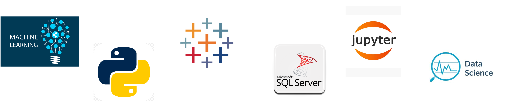

CORE COMPETENCIES
- Programming Language: Python, R, Advanced SQL scripting, VBA
- Statistical Analysis: Inferential Analysis, Exploratory Analysis, Predictive Analysis, Hypothesis Testing
- Data Science: Supervised Learning, Unsupervised Learning, NLP, Deep Learning
- Data Visualization: Tableau, Power BI, Seaborn, Matplotlib, ggplot
- Business Intelligence: SSIS, SSAS, Alteryx
PROFESSIONAL EXPERIENCE
Engineering Data Analyst II | TTX Company(Mar 2021 - Present)
- Created Machine Learning Models, Statistical Analysis and Visualizations from the data coming from more than 1400+ IoT sensors installed for tracking the railcars and its components.
- Developed Python tool for filtering the noisy data from 50M+ rows of data coming from the IoT sensors for precise analysis of the ‘railcar impact’ as a part of R&D project.
- Developed Logistic regression model to predict ‘wheel eater railcars’ from 47k+ railcars in the fleet, resulting in 20% reduction in maintenance costs, and 15% decrease in railcar downtime.
- Developed dashboard that reduces railroad report preparation time from 48 hours to 2 hours saving 46 resource hours.
- Assist R&D and Senior Engineers make critical decisions in choosing components to be deployed in the entire fleet of 230,000 railcars. Performed statistical tests using Python, SQL by integrating diverse data sources and interpreted the results.
Graduate Teaching Assistantship | Northern Illinois University (Jan 2019 – May 2019)
- Teaching Assistant for undergrad students for Business Statistics course.
- Assisted them in understanding core statistical concepts like Hypothesis testing, Descriptive and Inferential Statistics.
- Assisted professor in organizing Python and Data visualization bootcamp using Tableau desktop.
Senior Analyst | Vodafone India Services(Sep 2011 – Oct 2015)
- Implemented Logistic Regression using Scikit-learn to reduce customer churn and improving customer satisfaction. Achieved an AUC-ROC of 0.85 and a precision-recall area under the curve of 0.78, enabling proactive churn mitigation efforts and saving the company $1.8 million annually.
- Utilized historical sales and inventory data to build a demand forecasting model using Random Forest regression which reduced excess inventory by 20% and stockouts by 15%, resulting in cost savings of $1.5 million annually and improved customer satisfaction.
- Conducted Cohort Analysis using Tableau to calculate retention rates and CLV for each cohort which resulted in identifying high-value cohorts with a retention rate of 70% and increased customer retention by 15% through targeted retention strategies.
- Define metrics, analyze trends, develop insights and compelling visualizations in Tableau to drive Enterprise growth
- Answer business questions through independent investigation/data forensics. Identify operational inefficiencies, data quality issues, and behavioral trends.
- • Generate on demand ad-hoc data/report to the customers by through advance SQL scripting in MS SQL server.
Analyst | eClerx Services(Aug 2010 – Sep 2011)
- Competitive Pricing Analysis for largest drug retailer in US.
- Proactively develop interactive dashboards, documentation and training to help business teams effectively leverage data
- Develop monthly, quarterly and annual reporting dashboards that generate insights and inform business decision.
- Process automation using VBA results in reduction of reporting time by 30%.